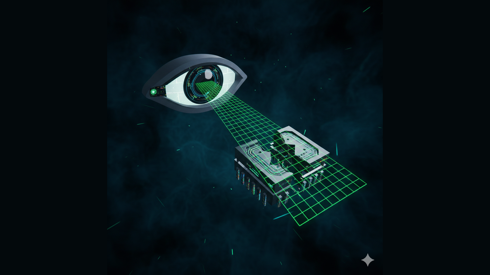

O Protocolo de Lucerna — Episódio 3: O Ponto Cego da Qualidade (O QA Invisível)

Arquitetando a Soberania em Ambientes de Alta Incerteza.
Tempo de leitura: 8 minutos
Os dois primeiros episódios desta série colocaram o Núcleo de Engenharia diante do ultimato comercial e, em seguida, diante do silêncio imposto pelo compliance. Aqui, a revelação é outra: a estrutura de Quality Assurance prometida contratualmente não existe na operação real. O que foi vendido como “Software como Produto” — com camadas de verificação, homologação dedicada e baseline de confiabilidade — revela-se, na trincheira, como “Software como Artefato Construído” em ambiente escasso. E quem paga o preço dessa diferença é quem escreve o código: o engenheiro torna-se, por ausência de alternativa, o único guardião da integridade do sistema.
1. A Anatomia de uma Promessa
Há um abismo estrutural entre o que se contrata e o que se executa em projetos de migração de sistemas de missão crítica. No papel, o “Software como Produto Vendido” inclui especificação, desenvolvimento, testes unitários, testes de integração, QA dedicado, ambiente de homologação espelhado, critérios de aceite e sign-off formal. Cada uma dessas camadas funciona como um filtro: reduz a probabilidade de que um defeito chegue à produção. No contrato, essa cadeia existe. Na operação real de muitos projetos sob pressão, uma ou várias dessas camadas são fantasmas: mencionadas em reunião de kick-off, ausentes no dia a dia.
O “Software como Artefato Construído” é o que de fato acontece quando o time de desenvolvimento trabalha em um Ambiente de Homologação Efêmero, com prazos que não permitem ciclos completos de teste, e sem um corpo dedicado que faça a pergunta incômoda: “e se o usuário fizer X?”. Nesse cenário, a promessa de qualidade não foi quebrada por má-fé; foi esvaziada por priorização. O cliente quer entrega. A gestão quer entrega. A única linha de defesa entre o código recém-escrito e o ambiente de produção é o próprio autor do código — e, quando existe, o par de revisão, que também está sob a mesma pressão. A anatomia da promessa, portanto, não é ética no sentido de “mentira”; é estrutural: o modelo de entrega assumido no contrato não se sustenta no modelo de operação real. Quem percebe isso primeiro é quem está na ponta: o Núcleo de Engenharia.
O contrato vende camadas de segurança.
A operação entrega uma única camada:
quem codifica é quem valida.2. O Engenheiro Panóptico
O conceito panóptico, em Foucault, descreve uma arquitetura em que o vigiado não sabe quando está sendo observado e internaliza a vigilância. Na engenharia de software sob escassez de QA, ocorre algo análogo, porém invertido: o desenvolvedor não pode depender de um vigilante externo. Ele precisa ser, simultaneamente, o criador e o crítico. O cérebro do engenheiro é obrigado a alternar entre modo “construção” e modo “destruição controlada” — escrever o código que resolve o problema e, em seguida, atacar esse mesmo código em busca de falhas que um QA dedicado procuraria.
Essa duplicidade tem custo cognitivo. O viés de confirmação tende a fazer com que quem escreveu uma rotina enxergue nela menos defeitos do que um revisor externo. A objetividade técnica exige um deslocamento mental: tratar o próprio artefato como se fosse de outro, questionar premissas, simular fluxos de exceção, considerar dados malformados ou estados de corrida. Os Analistas de Missão que operam nesse regime não são “melhores” por natureza; são obrigados a internalizar um processo que, em ambientes saudáveis, seria distribuído. A pergunta central não é “o desenvolvedor consegue fazer QA de si mesmo?” — em muitos casos, consegue, com disciplina. A pergunta é: “por quanto tempo e sob que carga isso é sustentável?”. A soberania técnica, aqui, convive com o risco de sobrecarga: o mesmo cérebro que protege o sistema pode, no limite, falhar por fadiga.
3. Teoria do Erro em Missão Crítica
Em sistemas de missão crítica, um erro não detectado não é apenas “um bug a mais”. É uma dívida que será paga em produção, com usuários reais e, em contextos financeiros ou de infraestrutura, com impacto mensurável em dinheiro ou segurança. A Falha de Invisibilidade de Registros em Camada de Subscrição serve como exemplo abstrato — e didático — dessa teoria.
Imagine uma camada de software responsável por subscrever eventos e persistir registros em um repositório. Em condições normais, o fluxo parece correto: os dados entram, são transformados e gravados. O que a refatoração rigorosa de persistência revelou, em um caso real anonimizado, foi que certos registros gerados em cenários de borda não estavam sendo escritos no destino esperado; permaneciam, de certa forma, “invisíveis” para as consultas subsequentes. O comportamento observado em homologação era “tudo funciona” porque os testes não cobriam aquele caminho específico. Quando a refatoração exigiu varrer todos os pontos de escrita e leitura, a inconsistência veio à luz: não era um bug de lógica óbvia; era um bug de visibilidade — o sistema “achava” que tinha persistido, mas uma condição de corrida ou um mapeamento incompleto deixava uma fração dos registros fora do Baseline de Confiabilidade.
Sem uma camada de QA que exercite cenários de borda e valide a integridade do ciclo de vida dos dados, esse tipo de falha só aparece quando algo quebra em produção — ou quando um engenheiro, no papel de crítico de si mesmo, decide revisar a persistência com olhar de arqueólogo. A teoria do erro em missão crítica pode ser resumida assim: o erro não detectado é tempo-bomba. Quem não investe em detecção investe, involuntariamente, em correção tardia — e o custo da correção tardia em sistemas críticos é ordens de grandeza maior.
O erro que a homologação não vê
não desaparece. Ele espera
pelo pior momento para aparecer.4. Soberania vs. Sobrecarga
A Soberania Tecnológica de um projeto não é apenas a capacidade de decidir stack, arquitetura ou prazo. É a capacidade de garantir que o que foi entregue atenda a um padrão mínimo de integridade — e de assumir a responsabilidade quando esse padrão não é atingido. A ausência de uma camada de QA dedicada afeta essa soberania de duas formas: positiva e negativa.
Positivamente, força o Núcleo de Engenharia a “possuir” o resultado de ponta a ponta. Não há terceirização da culpa: se algo quebra, o time que codificou é o mesmo que deveria ter validado. Essa concentração de responsabilidade pode elevar o rigor individual — desde que o time tenha maturidade e tempo para exercer o papel duplo de criador e crítico.
Negativamente, a mesma concentração gera sobrecarga. O erro não detectado vira dívida de soberania: o cliente (ou o usuário final) pagará no futuro, na forma de incidente, retrabalho ou perda de confiança. O projeto que “entregou no prazo” mas não tinha QA real está, na prática, transferindo risco para a fase de produção. A soberania, nesse sentido, exige que o arquiteto e o time reconheçam o limite: há um ponto em que “fazer tudo sozinho” não é heroísmo; é apostar com o patrimônio de quem vai operar o sistema. A governança de alta performance não é fazer mais com menos; é definir claramente o que é aceitável como Baseline de Confiabilidade e não declarar “pronto” aquilo que não foi validado contra esse baseline.
5. Conclusão: A Ética do Arquiteto
A lição que fecha este episódio é direta: na ausência de guardiões dedicados, o Arquiteto torna-se a própria lei de qualidade. Não por escolha romântica, mas por consequência estrutural. Quando a promessa contratual de QA não se materializa na operação, alguém precisa assumir o papel de crítico — e esse alguém, nos projetos do Protocolo de Lucerna, é o próprio Núcleo de Engenharia. A ética do arquiteto, nesse contexto, não é “cobrar da gestão um QA que não virá”; é, dentro do possível, não deixar que um artefato crítico cruze a fronteira para produção sem ter passado por algum critério mínimo de verificação. Mesmo que esse critério seja o auto-review rigoroso, a checklist mental de cenários de borda ou a decisão consciente de documentar a limitação (“este fluxo não foi coberto por falta de ambiente dedicado”).
O Protocolo de Lucerna registra: a soberania técnica inclui a responsabilidade pela qualidade. Se não há terceiro para culpar, não há terceiro para esconder-se. O arquiteto soberano é aquele que, na escassez, não abandona o padrão — e que deixa registrado, para o próximo episódio e para o próximo projeto, o custo invisível de operar sem o QA que foi prometido.
Nos próximos episódios, abordaremos o rastro digital em ferramentas de colaboração, a identidade fluida do profissional entre trincheira e palco global, e o grande pente fino da higiene de dados. Até lá: que seu código passe pelo crítico que você mesmo se dispuser a ser.
— Fim do Episódio 3. Continua em “A Anatomia do Rastro Digital”.